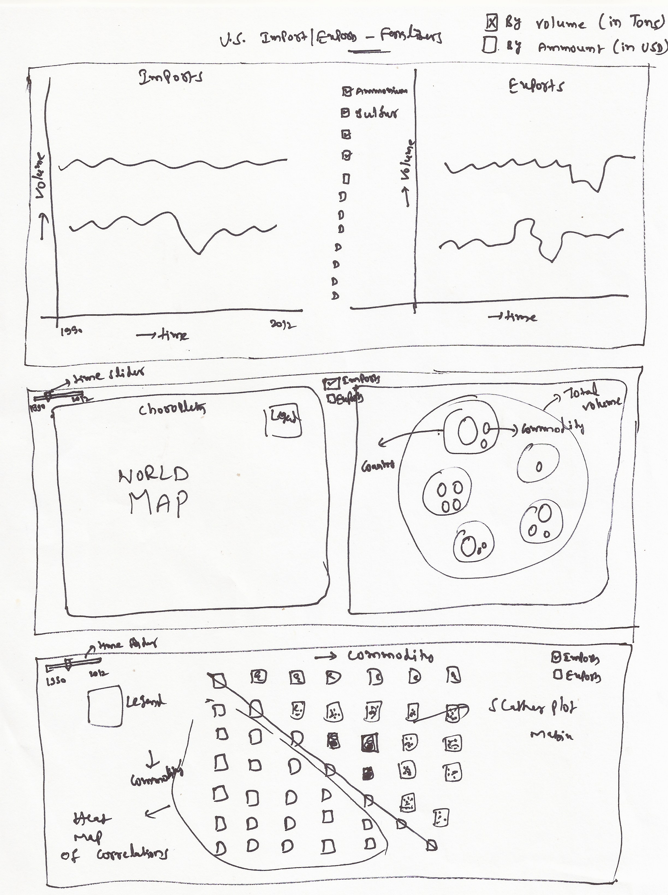

Fertilizer Imports/Exports Data - USA
Data Set can be found here.
Planned Tools
- Python and R to pre process the data
- D3 for developing prototypes
- D3 for final visualizations
Planned Techniques
Multi Series Line Chart
- Time series of total value of each commodity (fertilizer)
- It can be either Volume (in tons) or ammount (in dollars)
- Import/Exports plots will be shown side by side
- This plot gives an overview of changes in the volume/dollar value of each commodity over the time
Choropleth
- Country wise annual U.S. imports and exports
- It can be either volume (in tons) or ammount (in dollars)
- Tone of color is used to encode the volume
- Either Import or Exports data wil be shown by toggling a button
- A slider will be provided to change the time (Year)
- Top three commodities by country information is shown on hover
- This plot gives an overview of total import/exports volume/dollar value by country
Circle Packing
- Country wise annual U.S. imports and exports
- It can be either volume (in tons) or ammount in dollars
- Size fo bubble is used to encode the volume
- Either Import or Exports data wil be shown by toggling a button
- A slider will be provided to change time (year)
- This plot provides information about the contribution of each country, commodity to total import/exports volume/dollar value
Scatter-Plot Matrix and Heat Map
- Upper Triangle- Scatter plot matrix of annual U.S. imports and exports by commodity (fertilizer)
- Lower Triangle - Exact correlations between the commodities
- Color is used to code the correlations
- It can be either Volume (in tons) or ammount in dollars
- Either Import or Exports data wil be shown by toggling a button
- A slider will be provided to change the time (Year)
- This plot provides insights into co-occurences of commodities
Planned Interaction
- A button indicating either volume (in tons) or ammount (in dollars) at top level, which is applied to all the visualizations (Linked Interaction)
- Details on demand (on hover) for multi series line chart
- Linked Import/Exports button for Choropleth and Circle Packing
- Linked slider for changing the time (year) for Choropleth and Circle Packing
- Details on demand (top 3 commodities for highlighted country) on hover for Choropleth
- Highlighting the country/bubble on hover (Linked Interaction) for Choropleth and Circle Packing
- Zooming functionality for Scatter-Plot Matrix
- Import/Exports button and time slider for Scatter-Plot Matrix
Planned Interface
Layout of the proposed visualzation is shown below.

Original Data can be found here. Licensing Information can be found here.